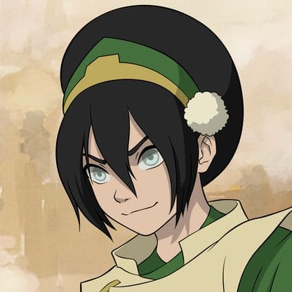
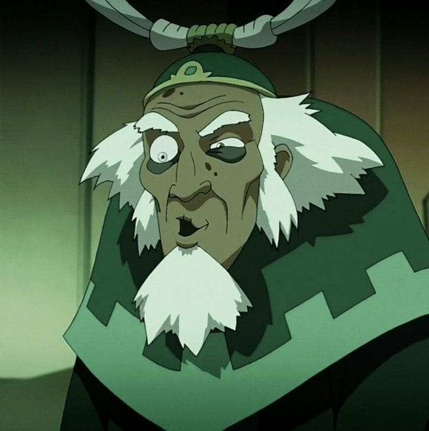
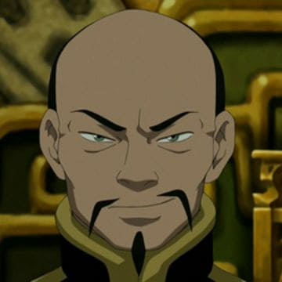

.png)

Na prática, isso significa que você é alguém confiável, que sustenta situações mesmo quando tudo parece difícil. Existe uma força silenciosa em você: não é sobre agir rápido, mas sobre não desistir. Assim como a dobra de terra em Avatar: A Lenda de Aang, sua essência está na resistência e na constância. Você pode até demorar para tomar decisões, mas quando toma, elas são sólidas e difíceis de abalar.
Toph Beifong A mais icônica dominadora de terra da franquia. Toph nasce cega em uma família rica e superprotetora de Ba Sing Se. Por ser considerada "frágil" e "indefesa", seus pais a mantinham trancada em casa. No entanto, ela aprende a dobra de terra com os texugos-cegos (animais que dominam terra e "enxergam" por vibrações) e desenvolve uma habilidade única: enxergar através do chão usando a vibração do solo — para ela, a cegueira não é uma limitação, pois "vê" cada pedra, árvore e pessoa com precisão. Toph se torna uma lutadora invencível no的地下 vale (Earth Rumble), usando o codinome "A Dominadora Cega". Seu estilo é agressivo, direto e baseado na postura firme (como uma rocha). Ela inventa a dobra de metal (metalbending) após ser trancada em uma gaiola de metal — sentindo as impurezas do minério dentro do metal, ela consegue manipulá-lo. Toph é a mestra de Aang (e depois de Korra no flashback), e sua personalidade é teimosa, sarcástica, rude, mas extremamente leal. Representa a filosofia da dobra de terra: esperar, sentir o momento certo e agir com força inabalável.


Bumi (Rei de Omashu) Amigo de infância de Aang (quando ainda eram crianças — Aang tinha 12, Bumi já era velho? Não, na verdade Bumi já era um menino, mas como não é Avatar, envelheceu). Em A Lenda de Aang, Bumi é um ancião de 112 anos, rei da cidade de Omashu, completamente excêntrico, maluco e brincalhão. No entanto, é um dos mais poderosos dominadores de terra do mundo. Sua dobra de terra é criativa e não convencional: ele consegue mover blocos enormes com um só movimento, erguer estátuas do chão e até controlar o solo para criar armadilhas. Bumi acredita que "há soluções malucas para problemas malucos" — seu estilo de luta parece aleatório, mas é altamente estratégico. Durante a invasão da Nação do Fogo a Omashu, ele se deixa capturar para, mais tarde, sozinho e em pleno Dia do Sol Negro (sem dobra de fogo inimiga), libertar toda a cidade usando apenas sua dobra de terra. Curiosidade: Bumi é o único que consegue dominar terra usando apenas o movimento do queixo quando imobilizado.
Long Feng Líder dos Dai Li (a polícia secreta de Ba Sing Se) e manipulador político que controlava o Rei Kuei. Long Feng é um dominador de terra extremamente habilidoso, especialista em dobra de terra refinada e precisa (diferente do estilo bruto de Toph). Ele usa técnicas de deslizamento rápido pelo chão, prisioneiros de terra instantânea e controle das placas de pedra. No entanto, é derrotado por Azula (que o manipula) e depois por Toph em combate direto. Long Feng representa o lado corrupto e opressor da dobra de terra — controle e repressão.
